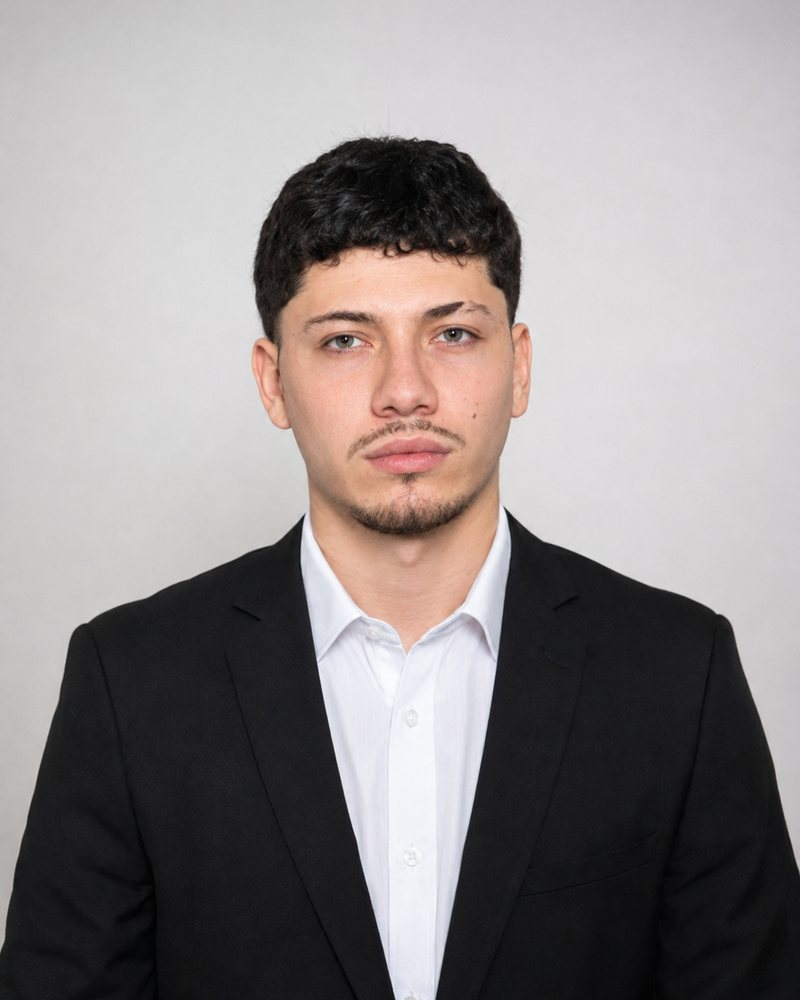

Estudio Ingeniería de Software en la Universidad Cooperativa de Colombia. Construyo páginas web, aplicaciones y sistemas que guardan y organizan información para que personas y negocios trabajen mejor.

Cada proyecto tiene una animación que muestra, paso a paso, qué hace. Haz clic en cualquiera para ver qué es, qué problema resuelve y cuál fue mi aporte.
Agrupadas según para qué sirven, para que se entiendan aunque no sepas de programación.
Antes de programar, aprendí a atender clientes. Hoy construyo pensando en quien va a usar lo que hago.
En 2022 trabajé como auxiliar de ferretería y atención al cliente en La Dorada, Caldas: asesoraba a los clientes, controlaba inventario y cumplía los tiempos de cada tarea.
Desde 2023 estudio Ingeniería de Software en Medellín. He trabajado en proyectos web, móviles, de bases de datos y de electrónica, la mayoría en equipo y con control de versiones en GitHub.
De lo más reciente a lo más antiguo. La próxima estación es la práctica profesional.
En desarrollo de software, páginas web, aplicaciones o bases de datos.
Una app educativa sin internet y el sitio web de una marca local de café y vino, ambos en equipo.
Sistemas con Java y Spring Boot, laboratorios con Arduino y una app de datos con PostgreSQL.
Trabajos en Python sobre cómo organizar información de forma eficiente.
Universidad Cooperativa de Colombia, Medellín. En curso.
La Dorada, Caldas. Asesoría a clientes, inventario y cumplimiento de objetivos.
Gimnasio Militar FAC Teniente Coronel, Puerto Salgar, Cundinamarca.